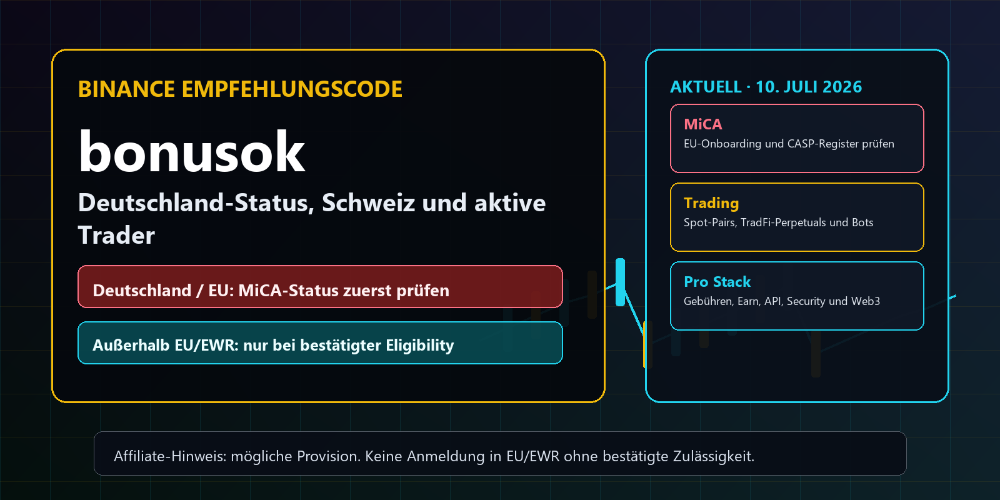
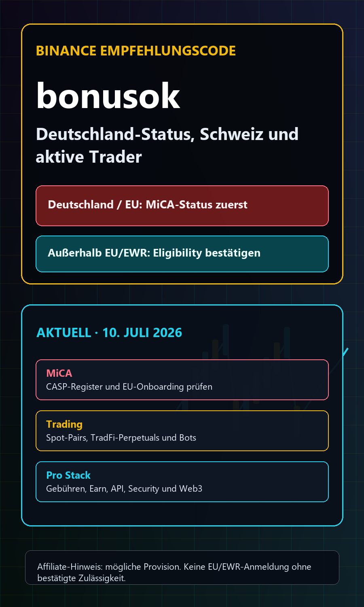
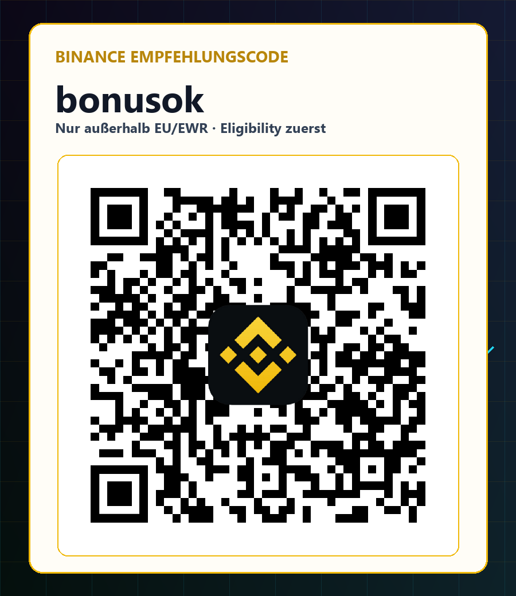

Wichtiger EU-Hinweis, geprüft am 2026-07-10: Die MiCA-Übergangsfrist endete am 1. Juli 2026. Das ESMA-CASP-Register mit Stand 3. Juli 2026 enthielt bei unserer Prüfung keinen Binance-Eintrag. Bewohner Deutschlands, Österreichs und anderer EU/EWR-Staaten sollten sich nicht über den Referral-Link registrieren, bis eine Autorisierung und die Wiederaufnahme des Onboardings offiziell verifiziert sind. Keine Umgehung per VPN, falscher Adresse oder fremder KYC.
Binance Empfehlungscode bonusok: Deutschland-Status, Schweiz und aktiver Handel 2026
Deutschsprachiger Binance-Guide zum Empfehlungscode bonusok mit MiCA-Status für Deutschland und die EU, Eligibility-Check für die Schweiz und die internationale Diaspora sowie aktuellen Hinweisen zu Gebühren, Spot, Futures, Earn, API, Trading Bots, Web3, Sicherheit und Delistings. Der Text ist keine Rechts-, Steuer- oder Anlageberatung. Er trennt bewusst Informationsinteresse in Deutschland von einer möglichen Registrierung berechtigter Nutzer außerhalb EU und EWR.


Feste Canvas-Größen und gemessene Textflächen; keine gestreckte Fotografie. Der echte QR befindet sich separat im Eligibility-Bereich.
Kurzfassung: Wer sollte den Code heute verwenden und wer nicht?
Der Binance Empfehlungscode bonusok ist ein Referral-Code, der beim Öffnen eines neuen Kontos über den zugehörigen Registrierungslink übergeben wird. In unserer internen Angebotsdatenbank ist die Kampagne mit bis zu 20 Prozent Fee Cashback und möglichen Boni bis 600 US-Dollar erfasst. Das sind keine garantierten Leistungen. Entscheidend sind die im Registrierungsprozess angezeigten Bedingungen, der tatsächliche Wohnsitz, die KYC-Prüfung, der Zeitpunkt der Anmeldung und die Verfügbarkeit des jeweiligen Produkts. Wer nur einen schnellen Gutscheincode sucht, sollte deshalb zuerst prüfen, ob Binance neue Kunden in seiner Jurisdiktion überhaupt annehmen darf.
Für Deutschland, Österreich und andere EU- beziehungsweise EWR-Staaten ist die Lage am 10. Juli 2026 besonders sensibel. Die MiCA-Übergangsfrist endete am 1. Juli 2026. ESMA verlangt von nicht autorisierten Crypto-Asset Service Providern, keine neuen EU-Kunden aufzunehmen und Marketing sowie aktive Ansprache einzustellen. Im ESMA-CASP-Register mit Stand 3. Juli 2026 ergab unsere Suche keinen Eintrag für Binance. Deshalb ist diese Seite für Bewohner Deutschlands und der EU eine Informations- und Statusseite, keine Aufforderung zur Neuanmeldung. Der Referral-Bereich ist ausdrücklich nur für berechtigte Nutzer außerhalb EU und EWR gedacht.
Deutschland und MiCA: Warum die App-Liste nicht genügt
Die Binance-Supportseite führt Deutschland in einer Liste von Ländern, in denen die iPhone-App grundsätzlich verfügbar ist. Diese Information wurde dort zuletzt am 9. Oktober 2025 aktualisiert. Eine App-Verfügbarkeit ist jedoch nicht dasselbe wie eine MiCA-Autorisierung für regulierte Kryptowerte-Dienstleistungen. Gerade nach dem 1. Juli 2026 muss ein deutscher Nutzer deshalb zwei Ebenen trennen: Kann die Anwendung technisch geladen werden, und darf der konkrete Anbieter das gewünschte Konto oder Produkt für den tatsächlichen Wohnsitz rechtlich anbieten? Nur die zweite Frage entscheidet über eine zulässige Neuanmeldung.
ESMA veröffentlicht ein Register autorisierter Crypto-Asset Service Provider und aktualisiert es regelmäßig. Das Register kann zeitlich hinter nationalen Entscheidungen zurückliegen, weshalb vor jeder Handlung erneut geprüft werden muss. Solange Binance dort nicht als autorisierter CASP erscheint oder Binance keine verifizierbare, landesspezifische Mitteilung zur Wiederaufnahme des Onboardings veröffentlicht, sollten Nutzer in Deutschland keinen Referral-Link, keinen QR-Code und keine fremde Anleitung als Ersatz für die regulatorische Prüfung verwenden. Ein VPN, eine falsche Adresse oder geliehene Identitätsdaten lösen das Problem nicht, sondern erhöhen Konto-, Auszahlungs- und Rechtsrisiken.
Schweiz und deutschsprachige Diaspora: Eligibility vor Bonus
Die Schweiz gehört nicht zur Europäischen Union. Binance führt die Schweiz in der genannten App-Supportliste als verfügbar. Daraus folgt trotzdem keine pauschale Freigabe für jede Person, jedes Produkt oder jede Zahlungsroute. Schweizer Nutzer sollten die tatsächliche Anbieterstruktur, KYC-Anforderungen, Produktfreigaben, Steuerfolgen und mögliche aufsichtsrechtliche Hinweise prüfen. Die FINMA weist 2026 besonders auf Verwahrungsrisiken hin, wenn Kryptowerte bei einem ausländischen Anbieter liegen. Bei einer Insolvenz können komplexe Fragen entstehen, etwa ob Kundenguthaben rechtlich abgesondert sind und welche Stelle Ansprüche durchsetzt.
Für deutschsprachige Menschen in Kanada, Australien, Lateinamerika, Asien, Afrika oder dem Nahen Osten gilt dieselbe Logik. Nicht Sprache oder Staatsangehörigkeit entscheidet, sondern der reale Wohnsitz und die dort geltenden Regeln. Prüfe, ob Binance und das konkrete Produkt im Konto sichtbar sind, ob eine lokale Gesellschaft oder ein grenzüberschreitender Anbieter zuständig ist, welche Dokumente KYC verlangt und ob Bank, Kartenanbieter oder Zahlungsdienst den Transfer erlaubt. Der Referral-Code ist erst nach dieser Prüfung sinnvoll. Wer eine unklare Situation durch falsche Angaben überbrückt, ist kein hochwertiger Lead und riskiert später eine gesperrte Auszahlung.
Was bonusok technisch macht
Der Referral-Link lautet accounts.binance.com/register?ref=bonusok. Der Parameter ref übermittelt den Empfehlungscode beim Start der Registrierung. Vor dem Absenden sollte im Formular sichtbar sein, dass bonusok übernommen wurde. Nach der Kontoeröffnung lässt sich ein fehlender Code häufig nicht nachträglich ergänzen. Genau deshalb lohnt es sich, Link und QR vorab zu kontrollieren. Der QR-Code in dieser Seite wurde nicht von einem Bildgenerator erfunden: Er stammt aus dem lokalen Binance-Asset, wurde in eine feste quadratische Fläche eingesetzt und anschließend aus der fertigen Grafik wieder decodiert.
Die Kampagnenangabe von bis zu 20 Prozent Fee Cashback und Boni bis 600 US-Dollar ist eine Obergrenze, kein Versprechen. Cashback kann von Handelstyp, Region, Kontoart, Aktionszeitraum oder weiteren Bedingungen abhängen. Ein Bonus kann Aufgaben wie KYC, Einzahlung, Mindestvolumen oder einen begrenzten Zeitraum voraussetzen. Lies im eigenen Konto die aktuellen Referral- und Promotion-Bedingungen. Wenn die Plattform eine andere Leistung anzeigt, gilt die Anzeige von Binance und nicht diese Seite. Ein Rabatt verbessert Kosten, macht aber aus einer schlechten Strategie keinen profitablen Handel.
Warum aktive Trader anders rechnen als Bonusjäger
Ein aktiver Trader sollte den Referral-Vorteil in Basispunkten denken. Maker- und Taker-Gebühren, Spread, Slippage, Funding, Finanzierungskosten, Abhebungsgebühren und Steueraufwand wirken zusammen. Bei hohem monatlichem Volumen kann ein dauerhafter Gebührenvorteil mehr wert sein als ein einmaliger Bonus. Umgekehrt kann ein einziger überhebelter Trade jeden Cashback-Vorteil vernichten. Berechne deshalb die Kosten pro Strategie: Wie viele Orders, welcher durchschnittliche Notional, welcher Maker-Anteil, welche erwartete Slippage und welche Finanzierungskosten entstehen pro Monat?
Gute Referral-Inhalte ziehen nicht möglichst viele Registrierungen an, sondern Menschen, die KYC sauber abschließen, Geld aus einer nachvollziehbaren Quelle einzahlen, mit kleinen Größen testen und nach sieben, 30 und 90 Tagen noch kontrolliert handeln. Für solche Nutzer sind Liquidität, Ordertypen, API-Stabilität, Exportfunktionen und Risikowerkzeuge wichtiger als ein lauter Bonus. Diese Seite behandelt deshalb aktuelle Produktänderungen, Delisting-Routinen, API-Sicherheit und Jurisdiktion ausführlich. Wer nach dieser Prüfung nicht berechtigt ist oder das Risiko nicht versteht, sollte nicht registrieren.
Neu am 10. Juli 2026: TradFi-Perpetuals
Binance kündigte am 10. Juli 2026 mehrere neue USD-margined TradFi-Perpetual-Kontrakte auf Basis von GEV, VRT, SNOW und APP an. Laut Bekanntmachung werden sie in USDT abgerechnet, rund um die Uhr gehandelt und können bis zu 25-fache Hebelwirkung bieten. Das ist für erfahrene Trader interessant, weil traditionelle Aktienreferenzen in eine kontinuierlich handelbare Derivateumgebung übertragen werden. Es ist jedoch kein Aktienbesitz: Der Nutzer hält keinen Anteil am Unternehmen, erhält keine Aktionärsrechte und trägt zusätzlich Funding-, Liquidations-, Basis- und Plattformrisiko.
Für Deutschland und die EU ist diese Meldung ausdrücklich kein Verfügbarkeitsbeleg. Binance selbst weist darauf hin, dass Produkte regional eingeschränkt sein können, und die MiCA-Situation kommt hinzu. Auch in der Schweiz oder anderen Ländern darf niemand aus einer globalen Produktankündigung ableiten, dass der Kontrakt im eigenen Konto zugelassen ist. Prüfe Sichtbarkeit, Vertragsbedingungen, maximale Hebelwirkung, Funding-Intervall, Steuerbehandlung und lokale Derivateregeln. Wenn das Produkt nicht angezeigt wird, ist Umgehung keine Option. Für die meisten Einsteiger ist ungehebelter Spot-Handel ohnehin die vernünftigere Lernumgebung.
Spot-Paar-Entfernungen und Trading Bots
Am 10. Juli 2026 entfernte Binance die Spot-Paare GMX/USDC, PARTI/FDUSD, RUNE/BTC, SEI/BTC und T/USDC. Die zugrunde liegenden Token blieben laut Mitteilung möglicherweise über andere Paare handelbar. Entscheidend für Bot-Nutzer: Binance beendete auch Spot-Trading-Bot-Dienste für die betroffenen Paare. Ein Grid Bot oder eine automatisierte Strategie darf daher nicht unbeaufsichtigt laufen. Pair Removal ist ein Betriebsereignis, kein bloßer News-Artikel. Offene Orders, Restbestände, Referenzwährung und alternative Märkte müssen vor der Frist geprüft werden.
Baue eine einfache Delisting-Routine: Abonniere offizielle Ankündigungen, führe eine Liste aller aktiven Paare, prüfe täglich Bot- und API-Positionen, lege Verantwortlichkeiten und eine Exit-Frist fest und exportiere den Zustand vor jeder Migration. Wenn ein Paar entfernt wird, kann die Liquidität schon vorher sinken und der Spread steigen. Ein Referral-Cashback schützt nicht vor einem schlecht ausgeführten Exit. Besonders bei API-Strategien sollten Symbole nicht hart im Code stehen, sondern gegen aktuelle Exchange-Informationen validiert werden. Teste außerdem, wie dein System mit abgewiesenen Orders und deaktivierten Märkten umgeht.
Earn Yield Arena: Rendite ist nicht risikofrei
Die Binance Earn Yield Arena vom 8. Juli 2026 bündelte zeitlich begrenzte Angebote aus Simple Earn, Staking, Dual Investment und weiteren Produkten. Genannt wurden unter anderem variable oder gestaffelte APR-Werte, Fristen, Mindestbeträge und Obergrenzen. Solche Übersichten sind ein guter Produkt-Discovery-Hook, aber die große Prozentzahl ist nicht die ganze Entscheidung. APR kann sich ändern, Kontingente können ausverkauft sein und Bonusstufen gelten oft nur für einen kleinen Betrag. Rendite wird außerdem in einem Kryptoasset gemessen, dessen Fiatwert stark schwanken kann.
Dual Investment und BTC Yield sind keine gewöhnlichen Sparkonten. Je nach Struktur können Optionen, Settlement-Preise oder eine Umwandlung zu einem ungünstigeren Marktkurs eine Rolle spielen. Vor einer Zeichnung sollte ein Trader den schlechtesten plausiblen Ausgang notieren: Welches Asset erhält er am Ende, wann ist Liquidität verfügbar, was passiert bei vorzeitiger Rückgabe und welche Gegenparteirisiken bestehen? Für EU-Nutzer muss zusätzlich geprüft werden, ob das Produkt regulatorisch verfügbar ist. Eine globale Earn-Seite oder ein QR-Code ersetzt diese Kontoprüfung nicht.
API 2026: Mehr Leistung verlangt bessere Kontrollen
Die Binance Developer Documentation wurde am 26. Juni 2026 aktualisiert und beschreibt REST, WebSocket, Streams, FIX, SBE sowie verschiedene Produktfamilien. Für professionelle Nutzer sind niedrigere Latenz, strukturierte Marktdaten und robuste Schnittstellen ein echter Grund, eine Börse zu bewerten. Entscheidend ist jedoch die Betriebsqualität. Eine API-Strategie braucht Clock-Synchronisation, Rate-Limit-Behandlung, eindeutige Client-Order-IDs, Wiederholungslogik ohne Doppelorder, Zustandsabgleich nach Timeouts, Monitoring der User-Data-Streams und einen manuellen Kill Switch.
Erstelle API-Schlüssel mit minimalen Rechten. Auszahlungen sollten deaktiviert bleiben. Nutze IP-Whitelists, getrennte Schlüssel pro Bot, ein Secret-Management-System und regelmäßige Rotation. Logge niemals Secret Keys oder vollständige Signaturen. Teste zuerst im Testnet oder mit kleinen Größen. Wenn ein Auftrag wegen eines Netzwerk-Timeouts unklar ist, darf der Bot nicht blind erneut senden; er muss Status und Order-Historie abgleichen. Ein aktiver Trader ist für Angreifer attraktiver als ein leeres Konto, deshalb gehören E-Mail-Sicherheit, 2FA-App, Anti-Phishing-Code und Withdrawal-Whitelist zum technischen Stack.
Spot, Margin und Futures sauber trennen
Spot bedeutet unmittelbaren Kauf oder Verkauf eines Assets, aber auch hier bestehen Kurs-, Liquiditäts-, Verwahrungs- und Emittentenrisiken. Margin fügt geliehenes Kapital, Zinskosten und mögliche Zwangsliquidation hinzu. Futures bringen Mark Price, Maintenance Margin, Funding und Hebelwirkung ins Spiel. Wer diese Produkte in einer einzigen Performance-Zahl vermischt, unterschätzt Risiko. Führe getrennte Budgets, Journale und Verlustlimits. Ein Spot-Portfolio darf nicht automatisch als Sicherheit für eine hoch gehebelte Strategie dienen, wenn du den Liquidationsmechanismus nicht vollständig verstehst.
Für einen neuen Account ist eine konservative Reihenfolge sinnvoll: Sicherheit einrichten, KYC abschließen, kleine Einzahlung testen, eine kleine Spot-Order ausführen, Historie exportieren und erst danach komplexere Produkte prüfen. Leverage ist kein Qualitätsmerkmal. Selbst erfahrene Trader sollten pro Strategie einen maximalen Tagesverlust, Positionsgrößenregeln, eine Grenze für korrelierte Exposures und einen Plan für Plattformausfälle festlegen. Wenn Futures im Wohnsitzland nicht verfügbar sind, bleibt diese Grenze bindend. Falsche KYC-Daten oder ein VPN sind keine Risikokontrolle.
Stablecoins und EWR-Beschränkungen
Binance weist in aktuellen Ankündigungen darauf hin, dass nicht autorisierte Stablecoins für EWR-Nutzer seit den MiCA-Stablecoin-Regeln eingeschränkt sein können. Für Trader wirkt das direkt auf Quote Assets, Earn-Produkte, Bots, Sicherheiten und Abwicklungswege. Ein Paar, das global existiert, muss für einen EWR-Account nicht handelbar sein. Prüfe deshalb nicht nur den Token, sondern auch die Kombination aus Basisasset, Quote Asset, Produkt und Konto. Änderungen können automatisierte Strategien unterbrechen oder eine geplante Auszahlung verteuern.
Ein Stablecoin ist kein risikofreier Euro- oder Dollarersatz. Relevante Fragen sind Emittent, Rechtsanspruch, Reserven, Rücknahme, Kettenrisiko, Bridge-Risiko, Depeg-Szenario und regionale Zulassung. Diversifikation über mehrere Stablecoins reduziert nicht automatisch Risiko, wenn sie denselben Verwahrer oder dieselbe Blockchain-Infrastruktur nutzen. Wer Cashback in einer bestimmten Währung erhält, sollte auch deren Liquidität und Verfügbarkeit prüfen. Für Deutschland gilt zusätzlich: Ein Produktmenü oder eine globale Ankündigung darf nicht als Beweis einer zulässigen Dienstleistung gelesen werden.
Web3 Wallet und Self-Custody
Web3-Funktionen erweitern den Nutzen einer Börsen-App, verschieben aber Verantwortung zum Nutzer. Smart-Contract-Approvals, Bridges, Phishing, Fake-DApps, manipulierte Signaturen und verlorene Seed Phrases können Geld endgültig vernichten. Nutze für neue Protokolle ein getrenntes Wallet mit begrenztem Kapital. Prüfe Contract-Adressen über mehrere Quellen, simuliere Transaktionen, widerrufe alte Approvals und signiere keine Nachricht, deren Inhalt du nicht verstehst. Ein Support-Team kann eine on-chain bestätigte Übertragung in der Regel nicht zurückholen.
Self-Custody löst dagegen das Plattformrisiko nicht kostenlos. Du trägst Backup-, Schlüssel- und Erbschaftsrisiken. FINMA betont bei Verwahrung im Ausland zusätzliche rechtliche Fragen im Insolvenzfall. Ein professioneller Ansatz kann mehrere Ebenen kombinieren: begrenztes Handelskapital auf der Börse, langfristige Bestände in kontrollierter Verwahrung, dokumentierte Backups und klare Transferprozesse. Teste jede neue Adresse mit einem kleinen Betrag und kontrolliere Netzwerk, Memo oder Tag. Wer nur wegen eines Bonus große Summen auf eine Plattform verschiebt, setzt die Reihenfolge falsch.
Einzahlung, Auszahlung und Herkunftsnachweise
KYC ist nicht nur das Hochladen eines Ausweises. Börsen und Zahlungsdienstleister können Adresse, Steuerwohnsitz, wirtschaftlich Berechtigten, Mittelherkunft und Transaktionszweck prüfen. Halte Kontoauszüge, Gehaltsnachweise, Verkaufsbelege, Wallet-Historien und Steuerunterlagen geordnet. Nutze Konten auf deinen eigenen Namen. Drittzahlungen, geliehene Bankkonten und P2P-Geschäfte außerhalb der Plattform erzeugen unnötige Compliance-Risiken. Wenn eine Einzahlungsmethode im Konto nicht angeboten wird, sollte sie nicht über inoffizielle Mittelsmänner ersetzt werden.
Vor einer größeren Einzahlung teste einen kleinen Betrag und eine kleine Auszahlung. Prüfe Gebühren, Mindestbeträge, Netzwerk, Bearbeitungszeit und Empfängeradresse. Bei P2P darf die Kommunikation und Zahlung nicht aus dem geschützten Ablauf herausgezogen werden. Gib Coins erst frei, wenn Geld unwiderruflich und auf dem richtigen Konto eingegangen ist. Screenshots sind kein Zahlungsnachweis. Für Deutschland und die EU ist derzeit die wichtigste Vorprüfung jedoch noch früher: Ohne bestätigte MiCA-Autorisierung und zulässiges Onboarding sollte gar kein neues Konto über einen Referral-Link eröffnet werden.
Steuern und Aufzeichnungen
Steuerregeln unterscheiden sich stark nach Wohnsitz, Haltedauer, Handelsfrequenz, Derivaten, Staking, Earn und beruflicher Einordnung. Diese Seite ist keine Steuerberatung. Ein aktiver Trader sollte trotzdem vom ersten Tag an Daten sammeln: Zeitstempel, Asset, Menge, Preis, Gebühren, Funding, Ein- und Auszahlungen, Wallet-Transfers, realisierte Ergebnisse und verwendete Strategie. Exporte sollten regelmäßig lokal gesichert werden, damit ein gesperrter Login oder eine spätere Produktänderung nicht die komplette Historie unzugänglich macht.
Trenne interne Transfers von steuerlich relevanten Veräußerungen und dokumentiere den wirtschaftlichen Zusammenhang. Bei API- und Bot-Handel wächst die Zahl der Datensätze schnell; ein monatlicher Reconciliation-Prozess ist besser als hektische Rekonstruktion am Jahresende. Prüfe, ob dein Steuerwerkzeug Futures, Funding, Earn-Rewards und Gebühren richtig abbildet. Referral-Cashback kann je nach Land ebenfalls steuerlich relevant sein. Wer als deutschsprachiger Auswanderer handelt, darf nicht automatisch deutsche Regeln anwenden, sondern muss den tatsächlichen Steuerwohnsitz und mögliche Wegzugs- oder Meldepflichten klären.
Sicherheits-Checkliste vor dem ersten Trade
Verwende ein einzigartiges Passwort aus einem Passwortmanager, eine Authenticator-App oder einen Hardware-Schlüssel, einen Anti-Phishing-Code und eine geschützte E-Mail-Adresse. Aktiviere eine Withdrawal-Whitelist und überprüfe angemeldete Geräte. Teile niemals OTP, Seed Phrase oder API Secret mit angeblichem Support. Rufe Binance über ein selbst gespeichertes Lesezeichen auf und vergleiche die Domain. Referral-Seiten dürfen nie nach Passwort, Ausweis oder Einzahlung fragen. Diese Seite leitet ausschließlich auf die offizielle accounts.binance.com-Adresse weiter.
Lege anschließend operative Limits fest: maximales Börsenguthaben, täglicher Verlust, maximale Ordergröße, maximale Hebelwirkung, erlaubte Netzwerke und eine Kontaktperson für Notfälle. Prüfe einmal pro Woche API-Schlüssel, aktive Sessions und Auszahlungsadressen. Bei ungewöhnlichen E-Mails öffne keine Links, sondern kontrolliere Mitteilungen direkt im Konto. Ein seriöser Bonus verlangt keine Fernwartungssoftware, keine Bildschirmfreigabe und keine Überweisung an einen privaten Wallet-Empfänger. Sicherheit ist der größte langfristige Hebel für Referral-Qualität.
30-Tage-Plan für berechtigte Nutzer außerhalb EU und EWR
Tag 1 bis 3: Prüfe Wohnsitz, lokale Regeln, Anbieterstatus, KYC und Produktverfügbarkeit. Öffne den Referral-Bereich nur, wenn diese Punkte eindeutig positiv sind. Kontrolliere bonusok vor dem Absenden, richte Sicherheit ein und zahle noch keinen großen Betrag ein. Tag 4 bis 10: Teste eine kleine Einzahlung und Auszahlung, handle eine kleine Spot-Position, exportiere die Historie und dokumentiere Gebühren. Beobachte, wie Ordertypen und Limits im eigenen Konto funktionieren.
Tag 11 bis 20: Erstelle Watchlist, Alerts, Trading-Journal, Risikobudget und eine Delisting-Routine. Wenn du eine API brauchst, beginne ohne Auszahlungsrecht und mit kleinen Orders. Tag 21 bis 30: Bewerte echte Kosten und Fehler, nicht nur Gewinn. Earn, Margin, Futures, TradFi-Perpetuals oder Web3 kommen nur hinzu, wenn sie lokal verfügbar sind und du das schlechteste Ergebnis erklären kannst. Wenn nach 30 Tagen die Disziplin fehlt, ist weniger Aktivität die bessere Entscheidung.
Häufige Fehler bei Binance Referral Codes
Der erste Fehler ist eine Registrierung, bevor der Code sichtbar bestätigt wurde. Der zweite ist die Annahme, dass App-Verfügbarkeit eine regulatorische Erlaubnis bedeutet. Der dritte ist das Übernehmen globaler Produktmeldungen auf das eigene Land. Der vierte ist eine große Einzahlung vor einer Testauszahlung. Der fünfte ist Hebelhandel ohne Liquidationsrechnung. Der sechste ist ein Bot ohne Delisting-Monitoring. Der siebte ist ein API-Key mit Auszahlungsrecht. Der achte ist das Ignorieren von Steuer- und Herkunftsnachweisen.
Noch schwerwiegender sind VPN-Nutzung zur Umgehung, falsche KYC-Daten, gemietete Accounts, Wash Trading, Mehrfachkonten für Boni und externe P2P-Absprachen. Solches Verhalten kann Kampagnenvorteile disqualifizieren, Konten sperren und Auszahlungen verzögern. Für Bewohner Deutschlands ist der häufigste Fehler im Juli 2026, eine alte Anleitung zu lesen, die vor dem Ende der MiCA-Übergangsfrist geschrieben wurde. Datum und Quellen gehören deshalb zur Entscheidung. Der Status muss unmittelbar vor der Registrierung erneut geprüft werden.
FAQ zum Binance Empfehlungscode bonusok
Kann ich bonusok in Deutschland verwenden? Nach unserer Prüfung vom 10. Juli 2026 sollte eine Neuanmeldung in Deutschland nicht über diese Seite beworben oder durchgeführt werden, solange keine verifizierte MiCA-CASP-Autorisierung und ausdrückliche Freigabe vorliegt. Ist die Schweiz automatisch erlaubt? Nein. Die App-Supportliste nennt die Schweiz, aber jeder Nutzer muss Anbieterstatus, Produkt, KYC, Zahlung und lokale Regeln prüfen. Ist der Bonus garantiert? Nein. Bis zu 20 Prozent Cashback und bis zu 600 US-Dollar sind bedingte Obergrenzen aus der Kampagnendatenbank.
Ist der QR echt? Ja. Der lokale QR und die fertige QR-Grafik werden auf die offizielle URL mit ref=bonusok geprüft. Kann ich Futures nutzen? Nur wenn das Produkt im Konto und im Wohnsitzland erlaubt ist und du die Risiken verstehst. Warum ist der Referral-Bereich eingeklappt? Damit EU- und EWR-Leser nicht durch eine prominente Handlungsaufforderung angesprochen werden. Er ist nur für Menschen außerhalb EU und EWR gedacht, die ihre Eligibility bestätigt haben. Ersetzt diese Seite Rechts- oder Finanzberatung? Nein.
Fazit
Ein guter deutscher Binance-Guide muss im Juli 2026 mehr leisten als einen Code zu zeigen. Für Deutschland und die EU steht der MiCA-Status vor jeder Conversion. Für die Schweiz und die weltweite deutschsprachige Diaspora stehen realer Wohnsitz, KYC, Anbieterprüfung und Produktverfügbarkeit an erster Stelle. Erst dann können Liquidität, Gebühren, API, Spot, Earn oder neue TradFi-Produkte einen echten Nutzen haben. Diese Reihenfolge schützt Nutzer und verbessert zugleich die Qualität potenzieller Referrals.
Wenn du außerhalb EU und EWR wohnst, Binance an deinem Wohnsitz und für dein gewünschtes Produkt zulässig ist und du die Risiken verstanden hast, kannst du den eingeklappten Referral-Bereich öffnen, den Ziel-Link prüfen und bonusok verwenden. Beginne klein, sichere das Konto, exportiere Daten und baue Risikoregeln vor Handelsvolumen. Wenn du in Deutschland oder einem anderen EU- beziehungsweise EWR-Staat wohnst, nutze die Quellen dieser Seite für den aktuellen Status und warte auf eine verifizierbare Autorisierung sowie klare Mitteilung von Binance.
Referral-Bereich nur für berechtigte Nutzer außerhalb EU und EWR öffnen
Bestätigung durch eigenes Handeln: Öffne diesen Bereich nur, wenn dein tatsächlicher Wohnsitz außerhalb EU/EWR liegt, Binance dort zulässig ist, dein gewünschtes Produkt im Konto verfügbar ist und du KYC sowie lokale Regeln einhalten kannst. Diese Abgrenzung ist kein Verfahren zur Umgehung von Beschränkungen.
Offizielle Binance-Registrierung mit bonusok prüfen

Der QR wurde aus dem lokalen Binance-bonusok-Asset in die feste 640×640-Pixel-Fläche eingesetzt und aus der fertigen PNG erneut decodiert. Nicht für Neuanmeldungen mit Wohnsitz in Deutschland, EU oder EWR.
Geprüfte Quellen
Quellenprüfung: 2026-07-10. Das ESMA-Register wird regelmäßig aktualisiert; prüfe den Live-Stand unmittelbar vor einer Entscheidung.
- ESMA: Markets in Crypto-Assets Regulation und MiCA-Register
- ESMA-Erklärung vom 23. Juni 2026 zum Ende der MiCA-Übergangsfrist
- ESMA: CSV-Register autorisierter Crypto-Asset Service Provider
- Binance: Liste unterstützter App-Regionen
- Binance: Terms of Use
- Binance: Risk Warning
- Binance Futures: neue TradFi-Perpetuals vom 10. Juli 2026
- Binance: Entfernung von Spot-Handelspaaren am 10. Juli 2026
- Binance Earn Yield Arena vom 8. Juli 2026
- Binance Developer Documentation, aktualisiert am 26. Juni 2026
- FINMA: Risiken bei der Verwahrung kryptobasierter Vermögenswerte
- FINMA: Bewilligte Institute und Anbieter prüfen
Affiliate-Offenlegung: Diese Seite enthält einen Referral-Link. Bei einer zulässigen Registrierung oder späterer Handelsaktivität können wir eine Provision erhalten. Risikowarnung: Kryptowerte, Derivate, Earn-Produkte, Bots und Web3 sind volatil und können zum Totalverlust führen. Vergangene Ergebnisse und Bonusangaben garantieren keinen Gewinn.